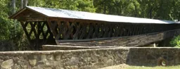
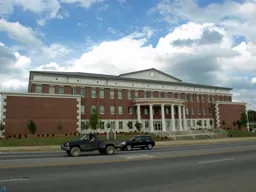
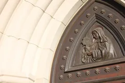
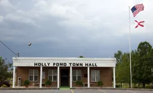
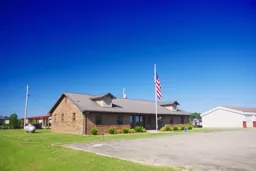
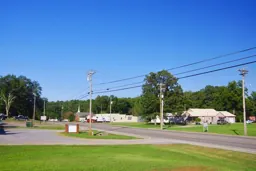
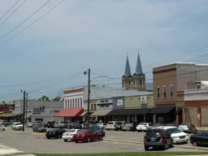
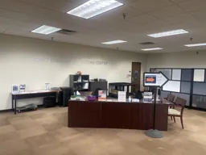

Your hometown guide to every local business, restaurant, church, school, and helping hand in Hanceville and Cullman County, Alabama, real phone numbers, directions, and the latest local posts, all in one free place.
734 free listings · Information verified October 2026 · Hanceville & Cullman County, Alabama ·
Loading Hanceville weather from the National Weather Service…
Browse by kind
Swipe sideways, or use the arrows. Tap a kind to filter the listings below.
Featured listings
Today's spotlight: loading, the featured row changes daily.
Charles Adams's two Facebook Pages. Tap to load the latest posts right here.
Hanceville Entertainment & Shopping
Cullman County Meme Factory
Meet your officials
Jeff Clemons ChairmanMatt Gentry SheriffTammy Brown Probate JudgeLisa McSwain Circuit ClerkEmily N. Johnston Circuit Judge, 32nd CircuitJ. Chad Floyd Circuit Judge, 32nd CircuitRusty Turner District JudgeBarry Willingham Revenue CommissionerWoody Jacobs MayorKim Hall Council President, Place 5David Moss, Jr. Council President Pro-Tem, Place 2Chuck Shikle Council Member, Place 1Jason Willoughby Councilmember, Place 3Paul Schaffer Councilmember, Place 4Wesley Moore City ClerkPam Leslie Deputy City ClerkKayla Johnson City Treasurer / Chief AccountantLeanne H. West Mayor's Executive AssistantJoey Duncan Police ChiefBrandon Patterson Assistant Police ChiefDarren Peeples Fire ChiefErica York, P.E., CFM City EngineerHannah Brown, P.E. Traffic EngineerMichelle Bates HR DirectorBlakelee Cockrell Court Clerk / Chief MagistrateSam Dillender SuperintendentNolan Bradford MayorTeja McIntyre City ClerkChris Hardin Fire ChiefTeresa Rivera DirectorDavid Wasilewski Parks DirectorRusty Fields City Operations ManagerKim Hall Board MemberPaul Schaffer Board MemberJason Willoughby Board MemberDr. Wayne Fuller Board MemberDr. Steve Murphree Board MemberBen Harrison DirectorJason Burney MayorVicki Ogletree Town Clerk
Official portraits from the county, city, and town websites.
Around Cullman County
Ave Maria Grotto, Cullman

Clarkson Covered Bridge

Cullman County CourthouseSmith Lake

Shrine of the Most Blessed Sacrament, Hanceville

Holly Pond Town Hall

Fairview Town Hall

Baileyton

Downtown Cullman

Wallace State, Hanceville
Real local photos, freely licensed (Wikimedia Commons).
Towns
All listings
Nothing matches that yet.
Try a shorter word, or a kind of place, like “barber”, “church”, or “food”. A place may not be listed yet; it can be registered free on the Register page.
Links last checked October 19, 2026.
Site information & policies
About this site
Hanceville Entertainment and Shopping is a free community directory for Hanceville and all of Cullman County, Alabama. It helps neighbors find local businesses, restaurants, churches, schools, nonprofits, city services, and help resources, with real phone numbers, directions, and the latest posts from local Facebook pages. The site is run by Charles Adams of Hanceville, Alabama. Listings are free, and nothing is published without the owner’s approval.
Privacy policy
This site does not require accounts, does not ask for passwords, and does not sell or share visitor information. The site itself sets no tracking cookies. Places you save are stored only in your own browser on your own device and never leave it. Search runs on your device. Weather comes from the National Weather Service. When you tap “See latest post” on a listing, that organization’s Facebook post loads from Facebook, and Facebook’s own privacy policy then applies. The site is hosted on GitHub Pages; like most hosts, GitHub may keep standard server logs. Questions about privacy can be sent by message to the Hanceville Entertainment & Shopping Facebook Page.
Terms of use
Information here is provided for community convenience and is believed accurate when published, but details such as hours, prices, and services can change. Please confirm important details directly with the business or organization. A listing is not an endorsement. Links lead to third-party websites that this site does not control. Business names and logos are used only to identify each business or organization and remain the property of their owners.
Listing & removal policy
Any Cullman County business, church, school, nonprofit, or community organization may be listed free of charge. New listings and changes are reviewed, and nothing is published without the owner’s approval. If your organization’s information is wrong, or you would like a listing or logo corrected or removed, message the Hanceville Entertainment & Shopping Facebook Page and it will be handled promptly. Inaccurate links are removed as soon as they are found.
Accessibility statement
This site aims to meet WCAG 2.1 AA: large readable text, strong color contrast in both day and night modes, full keyboard support, visible focus, and reduced motion for visitors who request it. If any part of the site is hard to use, please message the Hanceville Entertainment & Shopping Facebook Page so it can be fixed.
Contact
Charles Adams · Hanceville, Alabama · Facebook: Hanceville Entertainment & Shopping and Cullman County Meme Factory.
Own a business in Cullman County? Get listed free.
Join the 700+ local businesses, churches, schools, and nonprofits already listed here. Listing is free, and nothing is published without the owner’s approval.